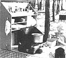
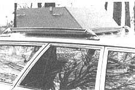
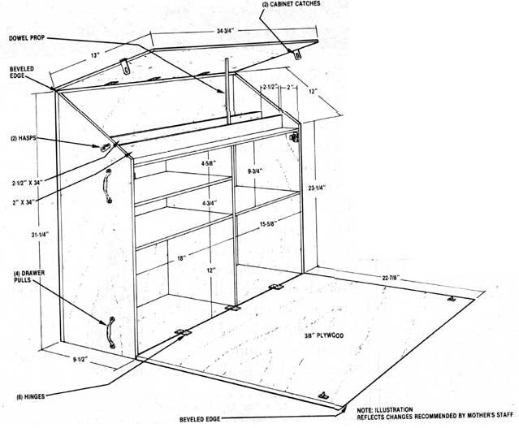

This easy-to-make carrier holds all your outdoor cooking equipment . . . including the sink!
If your preferred mode of camping falls somewhere between toting your gear on your back to a remote site and hauling it in the comfort of an RV, then you're a middle-of-the-road camper like me. As such, you probably don't carry well-organized pouches of freeze-dried food, nor do you pull a fully equipped kitchen behind your car. No, most likely your meals are cooked in the open air over a fire or a camp stove . . . and chances are that your "kitchen" is several haphazardly packed boxes or grocery bags stowed in the trunk among the sleeping bags, tents, and fishing rods.
In fact, I once thought it perfectly natural to make do with a camping kitchen that consisted of two apple boxes, assuming that sorting out jumbled (and often crumbled ) eatables was just one of the unavoidable headaches that came with the family outdoor experience. In my "Pandora's boxes", spices and condiments were always concealed in hard-to-reach corners, loaves of bread were invariably wedged between two hefty cans of baked beans, and more often than not I had to empty both crates to locate anything!
Once our family expanded to four, however, I made up my mind to find a better system for organizing our outdoor fare. Although my children found hunting for the "buried treasure" amusing, I was beginning to feel as though I was spending more time scrounging around in the back of the car than exploring the natural surroundings we'd traveled to see.
My answer to the foodstuffs storage problem is the cartop camping kitchen shown in the photos. The portable cabinet holds all the equipment needed for cooking and eating, including a dishpan sink! (Perishables, of course, are stored in a cooler or out of the sun in the backseat of the car.) We custom-fitted the homemade cupboard to our rooftop carrier, angling the front end of the unit to cut down on wind resistance. Once we'd determined the carryall's basic shape, we measured the items we planned to stock it with and simply designed shelves to fit. Then we cut 3/8" plywood to the desired specifications . . . added drawer pulls, hinges, hasps, cabinet catches, and a dowel "prop" . . . and sealed the outside of the cupboard with a coat of paint. Now, every item has its own special spot . . . and when the cabinet is set on the picnic table, the front section folds down to provide a small counter for meal preparation and a place to rig up the camp stove, if one is needed.
If you're looking for a way to streamline your family's car-camping excursions, you might want to spend an afternoon cobbling up your own version of our outdoor kitchen . . . after all, you can always find another use for those apple boxes!
|
 |
 |
 |